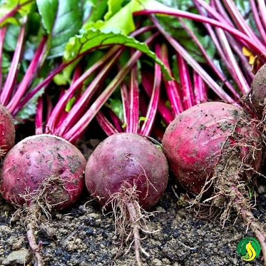

📖 Descrição
A beterraba (Beta vulgaris) é uma hortaliça de raiz rica em vitaminas, minerais e antioxidantes. Possui coloração vermelho-arroxeada devido à presença de betalaínas, compostos naturais benéficos para a saúde.
🌱 Cuidados
- Prefere solo fértil, leve e bem drenado.
- Necessita de irrigação frequente, sem encharcar.
- Desenvolve-se melhor em pleno sol.
- Realizar adubação com matéria orgânica.
- Manter o canteiro livre de plantas invasoras.
🌎 Origem
Originária da região do Mediterrâneo e do Oriente Médio.
🐝 Atrai quais polinizadores?
Quando floresce, atrai abelhas e outros insetos polinizadores importantes para o equilíbrio da natureza.
🍽️ Parte comestível
Raiz e folhas.
💚 Benefícios para a saúde
- Rica em ferro, potássio, ácido fólico e fibras.
- Auxilia na saúde cardiovascular.
- Contribui para o bom funcionamento do intestino.
- Possui ação antioxidante.
- Ajuda na disposição física.
🌼 Curiosidade
Além da raiz, as folhas da beterraba também são nutritivas e podem ser consumidas em saladas, refogados e sucos.
🌍 Importância para o meio ambiente
Seu cultivo favorece a biodiversidade da horta e incentiva práticas de agricultura sustentável e alimentação saudável.
🌾 Época de plantio
Pode ser cultivada durante todo o ano, apresentando melhor desenvolvimento em regiões de clima ameno.
📱 Acesse esta página pelo QR Code

Escaneie o QR Code para acessar esta página pelo celular.